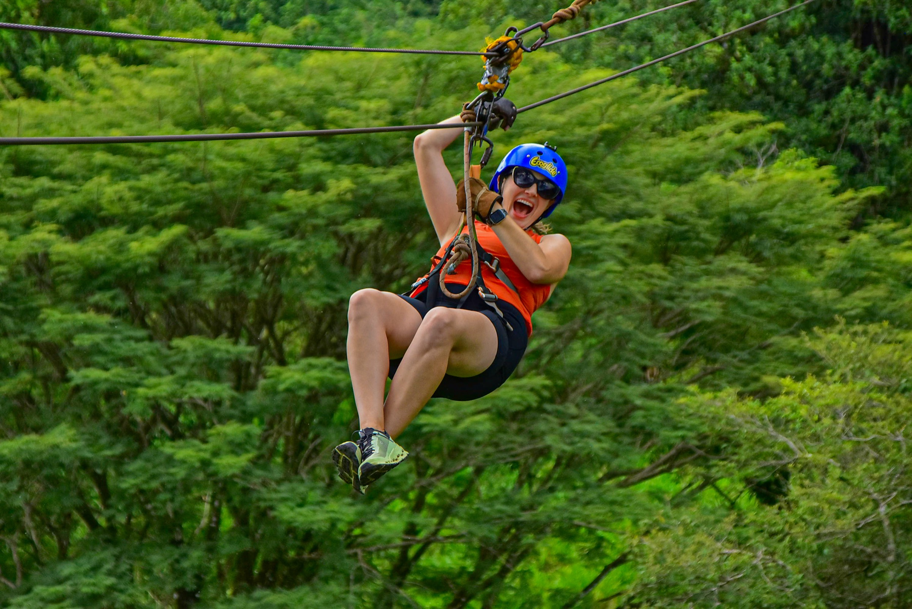
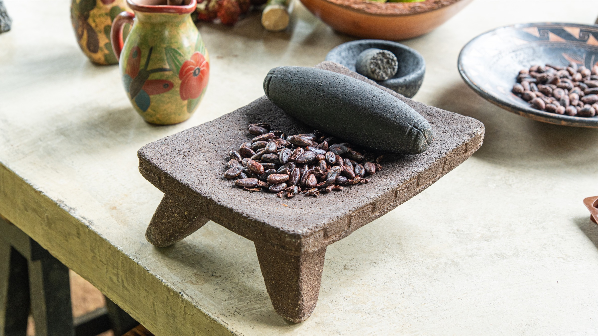
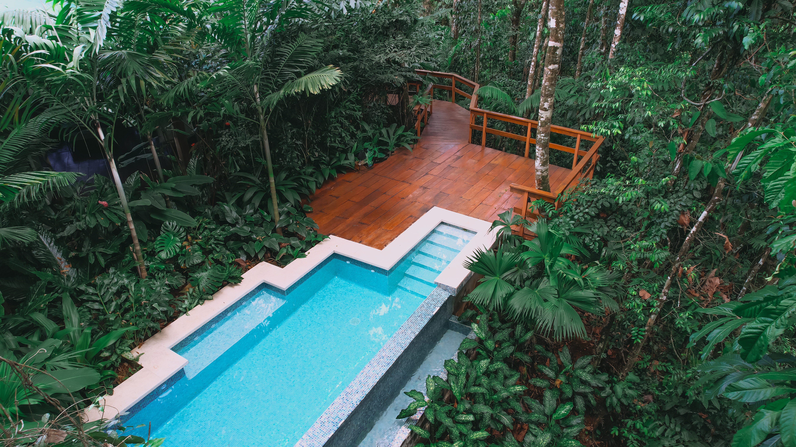
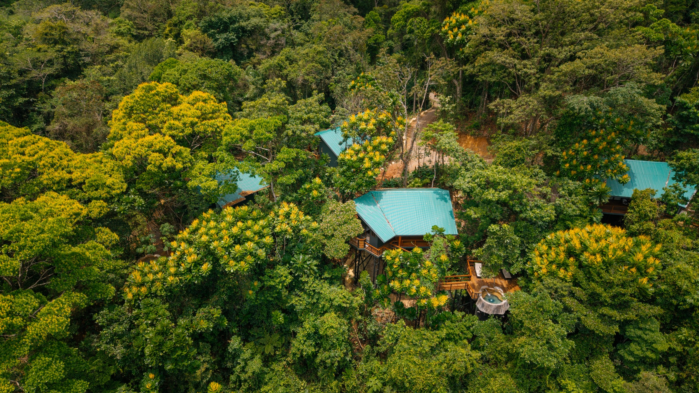
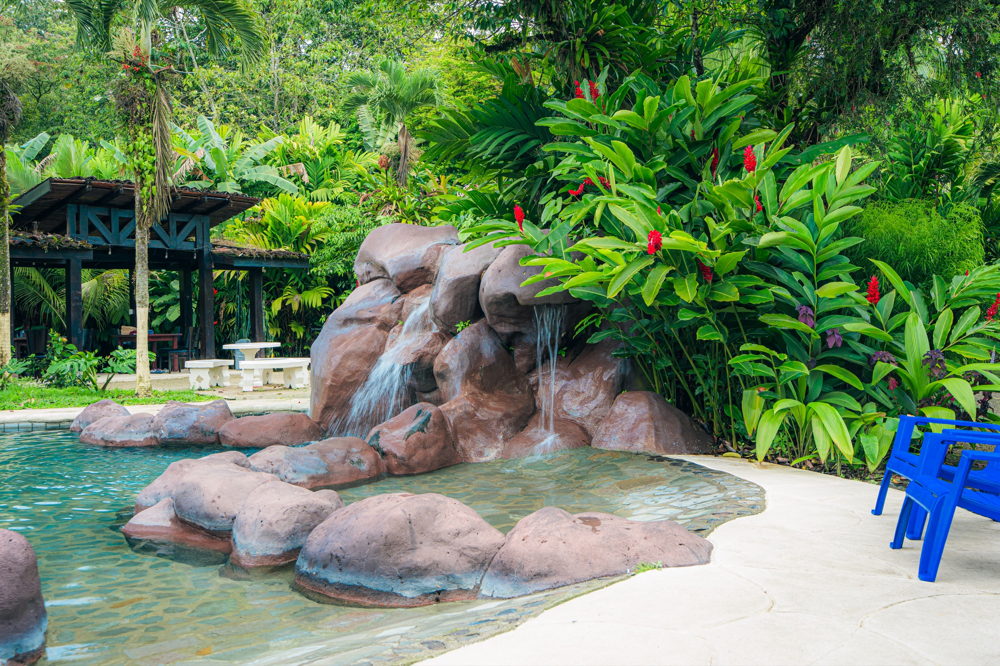
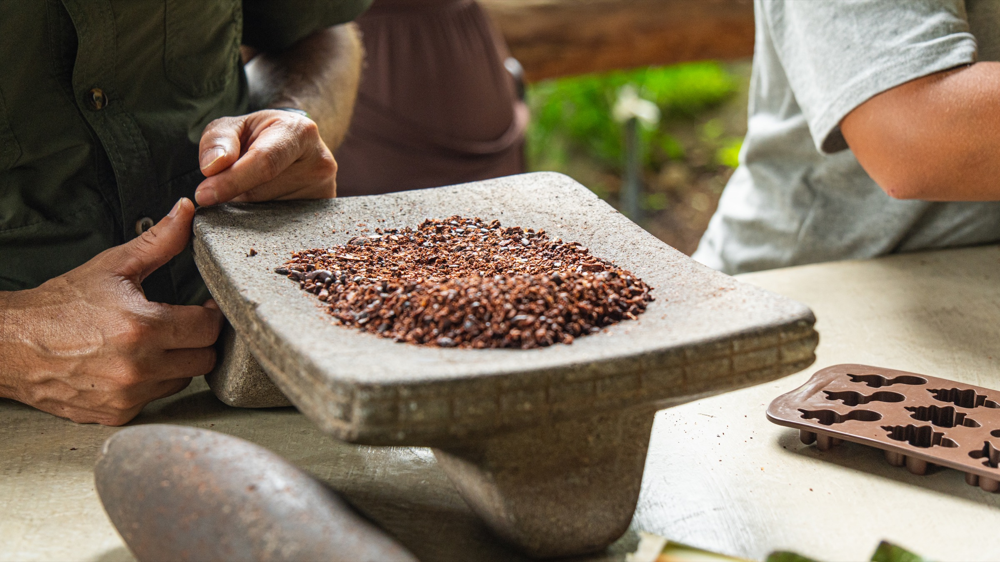
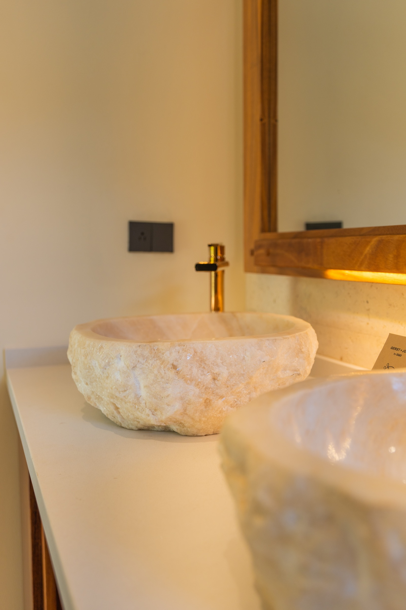
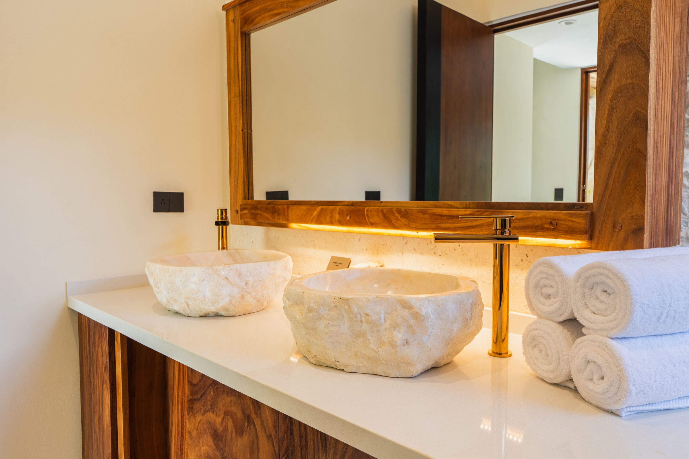
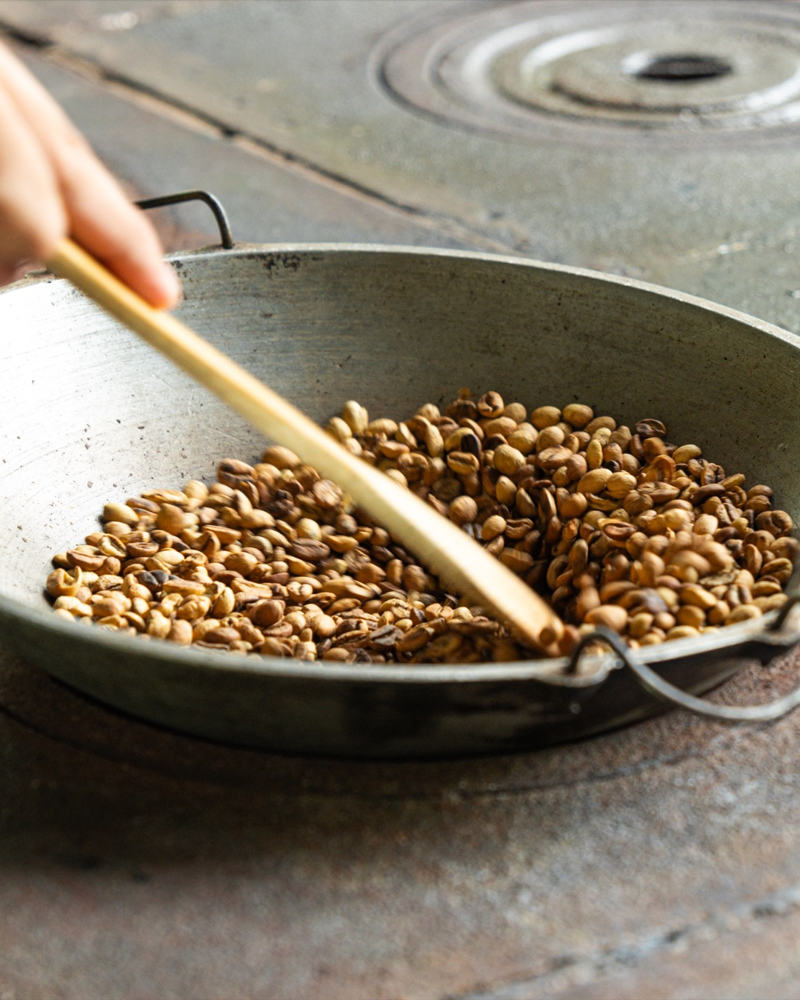

B04 · 2026-11-09


Blog: Introducing Rainforest Resorts: Chachagua and Arenal, Two Sister Properties
Meet Rainforest Resorts, the family behind Chachagua and Arenal. Explore two sister properties, local Travel Designers and an optional combined stay.

Rainforest Resorts · Content proposal
Client: Rainforest Resort
Chachagua & Arenal
November & December 2026 · English First
4 blogs · EN/ES24 bilingual posts8 snippets2 newsletters · EN/ES20 Meta concepts6 ChatGPT Ads
Priority launch communication · Proposed 12 November 2026
Chachagua introduces its sister property, Arenal Rainforest Resort, and the new Rainforest Resorts family. The edition leads with the announcement, then presents accommodation at both resorts and 12 selected experiences.

One launch story · Two accommodation sections · Twelve experiences · Arenal operating update
Six organic posts per hotel per month. Blog snippets are additional. All dates and paid campaign periods are proposed, not scheduled.
Download Excel calendar · November & December · Strategy & production notes
| ID | Proposed date / period | Brand / channel | Piece |
|---|---|---|---|
| CH01 | 2026-11-04 | Chachagua · Facebook / Instagram | Your Chachagua story now has a sister resort |
| AR01 | 2026-11-05 | Arenal · Facebook / Instagram | Meet Arenal, Chachagua’s sister in Rainforest Resorts |
| PA-AR-01 | 2026-11-06 – 2026-11-15 | Arenal · Meta Ads | Time Together |
| PA-CH-01 | 2026-11-06 – 2026-11-15 | Chachagua · Meta Ads | Time Together |
| CH02 | 2026-11-07 | Chachagua · Facebook / Instagram | One trail, different discoveries |
| B04 | 2026-11-09 | Chachagua Blog · EN/ES | Introducing Rainforest Resorts: Chachagua and Arenal, Two Sister Properties |
| OA01 | 2026-11-09 – 2026-11-30 | Chachagua · ChatGPT Ads | Chachagua for two |
| OA02 | 2026-11-09 – 2026-11-30 | Arenal · ChatGPT Ads | Your Arenal stay |
| OA05 | 2026-11-09 – 2026-11-30 | Both resorts · ChatGPT Ads | Two sister resorts |
| AR02 | 2026-11-10 | Arenal · Facebook / Instagram | An adventure you want to share |
| B04-S1 | 2026-11-10 | Blog promotion · EN/ES | Read B04 |
| PA-AR-02 | 2026-11-11 – 2026-11-20 | Arenal · Meta Ads | Different Paces, One Trip |
| PA-CH-02 | 2026-11-11 – 2026-11-20 | Chachagua · Meta Ads | Different Paces, One Trip |
| CH03 | 2026-11-12 | Chachagua · Facebook / Instagram | Two sister resorts, an adventure chosen together |
| NL01 | 2026-11-12 | Guest newsletter · EN/ES | Rainforest Resorts: Escape winter. Relax in our heated pools in Costa Rica. |
| AR03 | 2026-11-14 | Arenal · Facebook / Instagram | Choose the category, understand the conditions |
| B04-S2 | 2026-11-15 | Blog promotion · EN/ES | Read B04 |
| CH04 | 2026-11-16 | Chachagua · Facebook / Instagram | A question behind the chocolate |
| PA-AR-03 | 2026-11-18 – 2026-11-27 | Arenal · Meta Ads | Bring Your Curiosity |
| PA-CH-03 | 2026-11-18 – 2026-11-27 | Chachagua · Meta Ads | Bring Your Curiosity |
| AR04 | 2026-11-19 | Arenal · Facebook / Instagram | A sister-property visit, a story of coffee and cacao |
| CH05 | 2026-11-21 | Chachagua · Facebook / Instagram | A taste of Costa Rican tradition |
| B01 | 2026-11-23 | Chachagua Blog · EN/ES | Three Ways to Share the Rainforest Without Filling Every Hour |
| PA-AR-04 | 2026-11-23 – 2026-12-02 | Arenal · Meta Ads | Choose Your Place to Return |
| PA-CH-04 | 2026-11-23 – 2026-12-02 | Chachagua · Meta Ads | Choose Your Place to Return |
| AR05 | 2026-11-24 | Arenal · Facebook / Instagram | Planning you can share |
| B01-S1 | 2026-11-24 | Blog promotion · EN/ES | Read B01 |
| PA-AR-05 | 2026-11-26 – 2026-11-30 | Arenal · Meta Ads | Plan the Group Trip |
| PA-CH-05 | 2026-11-26 – 2026-11-30 | Chachagua · Meta Ads | Plan the Group Trip |
| CH06 | 2026-11-27 | Chachagua · Facebook / Instagram | From our garden to your table |
| AR06 | 2026-11-28 | Arenal · Facebook / Instagram | Share your attention to the landscape |
| B01-S2 | 2026-11-30 | Blog promotion · EN/ES | Read B01 |
| ID | Proposed date / period | Brand / channel | Piece |
|---|---|---|---|
| OA03 | 2026-12-01 – 2026-12-31 | Chachagua · ChatGPT Ads | Chachagua, shared |
| OA04 | 2026-12-01 – 2026-12-31 | Arenal · ChatGPT Ads | Arenal for family |
| OA06 | 2026-12-01 – 2026-12-31 | Both resorts · ChatGPT Ads | Winter, your way |
| CH07 | 2026-12-03 | Chachagua · Facebook / Instagram | The details you return to |
| PA-AR-06 | 2026-12-03 – 2026-12-12 | Arenal · Meta Ads | Room for a Pause |
| PA-CH-06 | 2026-12-03 – 2026-12-12 | Chachagua · Meta Ads | Room for a Pause |
| AR07 | 2026-12-04 | Arenal · Facebook / Instagram | Comfort begins with a clear choice |
| B02 | 2026-12-07 | Chachagua Blog · EN/ES | A Trip With Friends That Leaves Room for Different Paces |
| B02-S1 | 2026-12-08 | Blog promotion · EN/ES | Read B02 |
| CH08 | 2026-12-08 | Chachagua · Facebook / Instagram | A walk into the rainforest |
| AR08 | 2026-12-09 | Arenal · Facebook / Instagram | An outing chosen for their ages |
| PA-AR-07 | 2026-12-10 – 2026-12-19 | Arenal · Meta Ads | Something to Share |
| PA-CH-07 | 2026-12-10 – 2026-12-19 | Chachagua · Meta Ads | Something to Share |
| CH09 | 2026-12-12 | Chachagua · Facebook / Instagram | A river, another conversation |
| AR09 | 2026-12-13 | Arenal · Facebook / Instagram | A day to follow your curiosity |
| B02-S2 | 2026-12-14 | Blog promotion · EN/ES | Read B02 |
| PA-AR-08 | 2026-12-16 – 2026-12-25 | Arenal · Meta Ads | Cacao and New Questions |
| PA-CH-08 | 2026-12-16 – 2026-12-25 | Chachagua · Meta Ads | Cacao and New Questions |
| CH10 | 2026-12-17 | Chachagua · Facebook / Instagram | The forest at another hour |
| AR10 | 2026-12-18 | Arenal · Facebook / Instagram | One Rainforest Resorts family, two places to stay |
| B03 | 2026-12-21 | Chachagua Blog · EN/ES | From Cacao to the Trail: Discovering the Rainforest as a Family |
| PA-AR-09 | 2026-12-21 – 2026-12-27 | Arenal · Meta Ads | Plan Your Next Stay |
| PA-CH-09 | 2026-12-21 – 2026-12-27 | Chachagua · Meta Ads | Plan Your Next Stay |
| B03-S1 | 2026-12-22 | Blog promotion · EN/ES | Read B03 |
| CH11 | 2026-12-22 | Chachagua · Facebook / Instagram | Another pace through the landscape |
| AR11 | 2026-12-23 | Arenal · Facebook / Instagram | Give a day to the forest |
| PA-AR-10 | 2026-12-26 – 2026-12-31 | Arenal · Meta Ads | Start With Your Dates |
| PA-CH-10 | 2026-12-26 – 2026-12-31 | Chachagua · Meta Ads | Start With Your Dates |
| B03-S2 | 2026-12-28 | Blog promotion · EN/ES | Read B03 |
| CH12 | 2026-12-29 | Chachagua · Facebook / Instagram | Begin 2027 with the Rainforest Resorts family |
| AR12 | 2026-12-30 | Arenal · Facebook / Instagram | Your next chapter with Rainforest Resorts |
B04 · 2026-11-09
Meet Rainforest Resorts, the family behind Chachagua and Arenal. Explore two sister properties, local Travel Designers and an optional combined stay.
B01 · 2026-11-23

Plan a couples stay at Chachagua with a guided nature walk, yoga, and coffee and cacao, leaving time to rest between experiences.
B02 · 2026-12-07
Compare canopy, a safari float, and Pocosol for a friends trip based at Chachagua, with room arrangements, transfers, and time to rest.
B03 · 2026-12-21
Explore coffee and cacao, guided walks, and birdwatching at Chachagua, with age-specific planning, comfortable pauses, and clear activity conditions.
Facebook & Instagram · Blog reading promotions.
B01-S1 · 2026-11-24 · Chachagua Blog
Review draft · Selected image

Download Instagram image · PNG
A nature walk, yoga, and coffee and cacao. Three ways to share Chachagua without filling every hour. Read how to leave time for the two of you. Full article through the profile link.
Una caminata, yoga y café y cacao. Tres maneras de compartir Chachagua sin llenar cada hora. En el blog contamos cómo distribuirlas y conservar tiempo para ustedes. Artículo completo desde el enlace del perfil.
A nature walk, yoga, and coffee and cacao. Three ways to share Chachagua without filling every hour. Read how to leave time for the two of you. Read the article through this post’s link.
Una caminata, yoga y café y cacao. Tres maneras de compartir Chachagua sin llenar cada hora. En el blog contamos cómo distribuirlas y conservar tiempo para ustedes. Lee el artículo en el enlace de esta publicación.
Link · Article preview; CMS link pending
B01-S2 · 2026-11-30 · Chachagua Blog
Review draft · Selected image
Download Instagram image · PNG
Your accommodation is part of the time between experiences, too. Read our couples stay suggestion and begin with the pace you want to share. Full article through the profile link.
El alojamiento también se disfruta entre experiencias. Lee nuestra propuesta de viaje en pareja y empieza por elegir el ritmo que quieren compartir. Artículo completo desde el enlace del perfil.
Your accommodation is part of the time between experiences, too. Read our couples stay suggestion and begin with the pace you want to share. Read the article through this post’s link.
El alojamiento también se disfruta entre experiencias. Lee nuestra propuesta de viaje en pareja y empieza por elegir el ritmo que quieren compartir. Lee el artículo en el enlace de esta publicación.
Link · Article preview; CMS link pending
B02-S1 · 2026-12-08 · Chachagua Blog
Review draft · Selected image

Download Instagram image · PNG
One friend wants canopy. Another prefers the river. Read how to compare outings from Chachagua without crowding the programme. Full article through the profile link.
Una persona quiere canopy. Otra prefiere el río. El viaje con amigos puede dejar espacio para ambas. Lee cómo comparar excursiones desde Chachagua sin sobrecargar el programa. Artículo completo desde el enlace del perfil.
One friend wants canopy. Another prefers the river. Read how to compare outings from Chachagua without crowding the programme. Read the article through this post’s link.
Una persona quiere canopy. Otra prefiere el río. El viaje con amigos puede dejar espacio para ambas. Lee cómo comparar excursiones desde Chachagua sin sobrecargar el programa. Lee el artículo en el enlace de esta publicación.
Link · Article preview; CMS link pending
B02-S2 · 2026-12-14 · Chachagua Blog
Review draft · Selected image

Download Instagram image · PNG
Before booking for friends, share the decisions: beds, transfers, and personal time. Our new article helps start that conversation. Full article through the profile link.
Antes de reservar para el grupo, hay decisiones que vale la pena compartir: camas, traslados y tiempo propio. Nuestro nuevo artículo reúne ideas para empezar la conversación. Artículo completo desde el enlace del perfil.
Before booking for friends, share the decisions: beds, transfers, and personal time. Our new article helps start that conversation. Read the article through this post’s link.
Antes de reservar para el grupo, hay decisiones que vale la pena compartir: camas, traslados y tiempo propio. Nuestro nuevo artículo reúne ideas para empezar la conversación. Lee el artículo en el enlace de esta publicación.
Link · Article preview; CMS link pending
B03-S1 · 2026-12-22 · Chachagua Blog
Review draft · Selected image
Download Instagram image · PNG
Where does chocolate come from? Read how to choose coffee and cacao, trails, and birdwatching at Chachagua around your children’s ages. Full article through the profile link.
¿De dónde viene el chocolate? Esa pregunta puede abrir una experiencia en familia. Lee cómo combinar café y cacao, senderos y aves en Chachagua según las edades de tus hijos. Artículo completo desde el enlace del perfil.
Where does chocolate come from? Read how to choose coffee and cacao, trails, and birdwatching at Chachagua around your children’s ages. Read the article through this post’s link.
¿De dónde viene el chocolate? Esa pregunta puede abrir una experiencia en familia. Lee cómo combinar café y cacao, senderos y aves en Chachagua según las edades de tus hijos. Lee el artículo en el enlace de esta publicación.
Link · Article preview; CMS link pending
B03-S2 · 2026-12-28 · Chachagua Blog
Review draft · Selected image
Download Instagram image · PNG
A family holiday is about more than activities. Read our rainforest suggestion with time for questions and rest, and clear participation conditions. Full article through the profile link.
Un viaje familiar no se mide solo en actividades. También cuenta el tiempo para preguntar y descansar. En el blog compartimos una propuesta de bosque con pausas y condiciones claras. Artículo completo desde el enlace del perfil.
A family holiday is about more than activities. Read our rainforest suggestion with time for questions and rest, and clear participation conditions. Read the article through this post’s link.
Un viaje familiar no se mide solo en actividades. También cuenta el tiempo para preguntar y descansar. En el blog compartimos una propuesta de bosque con pausas y condiciones claras. Lee el artículo en el enlace de esta publicación.
Link · Article preview; CMS link pending
B04-S1 · 2026-11-10 · Chachagua Blog
Review draft · Selected image
Download Instagram image · PNG
Meet Rainforest Resorts: Chachagua and Arenal are two sister properties with different ways to discover the region. Read the family introduction and an optional combined-stay idea. Article through the profile link.
Conoce Rainforest Resorts: Chachagua y Arenal son dos propiedades hermanas con distintas formas de descubrir la región. Lee la presentación de la familia y una idea de estadía combinada. Artículo desde el enlace del perfil.
Meet Rainforest Resorts: Chachagua and Arenal are two sister properties with different ways to discover the region. Read the family introduction and an optional combined-stay idea. Read the article through this post’s link.
Conoce Rainforest Resorts: Chachagua y Arenal son dos propiedades hermanas con distintas formas de descubrir la región. Lee la presentación de la familia y una idea de estadía combinada. Lee el artículo en el enlace de esta publicación.
Link · Article preview; CMS link pending
B04-S2 · 2026-11-15 · Chachagua Blog
Review draft · Selected image
Download Instagram image · PNG
Meet Rainforest Resorts: Chachagua and Arenal are two sister properties with different ways to discover the region. Read the family introduction and an optional combined-stay idea. Article through the profile link.
Conoce Rainforest Resorts: Chachagua y Arenal son dos propiedades hermanas con distintas formas de descubrir la región. Lee la presentación de la familia y una idea de estadía combinada. Artículo desde el enlace del perfil.
Meet Rainforest Resorts: Chachagua and Arenal are two sister properties with different ways to discover the region. Read the family introduction and an optional combined-stay idea. Read the article through this post’s link.
Conoce Rainforest Resorts: Chachagua y Arenal son dos propiedades hermanas con distintas formas de descubrir la región. Lee la presentación de la familia y una idea de estadía combinada. Lee el artículo en el enlace de esta publicación.
Link · Article preview; CMS link pending
20 concepts, 10 per hotel. Each concept has one English version shared by the United States and Europe, and one Spanish version for Costa Rica. Market budgets remain separate.
PA-CH-01 · Chachagua
Composition reserved for the exact property or experience. This is a production draft.
There is a holiday between the activities, too. At Chachagua Rainforest Resort & Hot Springs, a Travel Designer helps you choose experiences, accommodation, and time to enjoy together.
Time Together. Explore the resort and plan your visit.
Entre una experiencia y la siguiente también hay viaje. En Chachagua Rainforest Resort & Hot Springs, un Travel Designer te ayuda a elegir naturaleza, alojamiento y pausas según lo que quieren compartir.
Tiempo para estar juntos. Descubre el resort y diseña tu visita.
PA-CH-02 · Chachagua

Your group does not need to want the same thing every hour. Explore regional outings and a base to return to at Chachagua Rainforest Resort & Hot Springs. Confirm activity and transfer arrangements with the team.
Different Paces, One Trip. Explore the resort and plan your visit.
El grupo no tiene que querer lo mismo a cada hora. Exploren experiencias externas en la región y un lugar al cual regresar en Chachagua Rainforest Resort & Hot Springs. La logística se confirma con el equipo.
Distintas ideas, un viaje. Descubre el resort y diseña tu visita.
PA-CH-03 · Chachagua

A question can open up the day. Plan nature experiences with Chachagua Rainforest Resort & Hot Springs around your children’s ages and interests. Confirm venue, participation, and transfers before booking.
Bring Your Curiosity. Explore the resort and plan your visit.
Una pregunta puede abrir el día. Planea con Chachagua Rainforest Resort & Hot Springs experiencias de naturaleza según las edades e intereses de tu familia. Sede, participación y traslados se confirman antes de reservar.
La curiosidad viene con ustedes. Descubre el resort y diseña tu visita.
PA-CH-04 · Chachagua

Your accommodation is part of the holiday. Explore Chachagua Rainforest Resort & Hot Springs and enquire about category features, availability, and conditions for your travel dates.
Choose Your Place to Return. Explore accommodation and plan your stay.
La habitación también forma parte del viaje. Conoce las categorías de Chachagua Rainforest Resort & Hot Springs y consulta características, disponibilidad y condiciones para tus fechas.
Elige cómo quieres regresar. Conoce las categorías y consulta su propuesta.
PA-CH-05 · Chachagua
Dates, travellers, and room arrangements: start with what your group needs. Visit Chachagua Rainforest Resort & Hot Springs and request a proposal with clear accommodation and logistics.
Plan the Group Trip. Explore accommodation and plan your stay.
Fechas, viajeros y distribución de habitaciones: empecemos por lo que su grupo necesita. Visita Chachagua Rainforest Resort & Hot Springs y solicita una propuesta con categorías y logística claras.
Planeemos el viaje del grupo. Conoce las categorías y consulta su propuesta.
PA-CH-06 · Chachagua
Composition reserved for the exact property or experience. This is a production draft.
Some holiday days work beautifully with fewer bookings. Discover Chachagua Rainforest Resort & Hot Springs and start planning Costa Rica with selected experiences and time of your own.
Room for a Pause. Explore the resort and plan your visit.
Hay días que se disfrutan con menos reservas. Descubre Chachagua Rainforest Resort & Hot Springs y empieza a diseñar una visita a Costa Rica con experiencias elegidas y tiempo propio.
Una pausa dentro del viaje. Descubre el resort y diseña tu visita.
PA-CH-07 · Chachagua

Canopy or a nature outing: choose what actually interests your group. Enquire through Chachagua Rainforest Resort & Hot Springs about external experiences, participation, and transport.
Something to Share. Explore the resort and plan your visit.
Canopy o una experiencia de naturaleza: elijan lo que de verdad les interesa. Desde Chachagua Rainforest Resort & Hot Springs, consulta opciones externas, participación y transporte para su grupo.
Una experiencia para compartir. Descubre el resort y diseña tu visita.
PA-CH-08 · Chachagua

The coffee and chocolate tour takes place at Chachagua. Ask Chachagua Rainforest Resort & Hot Springs about ages, access, costs, and logistics for your family, and see how it could fit your stay.
Cacao and New Questions. Explore the resort and plan your visit.
El tour de café y chocolate ocurre en Chachagua. Consulta con Chachagua Rainforest Resort & Hot Springs edades, acceso, costos y logística para tu familia, y descubre cómo puede encajar en la estadía.
Del cacao a nuevas preguntas. Descubre el resort y diseña tu visita.
PA-CH-09 · Chachagua

Tell us your dates and what you want from the trip. Ask Chachagua Rainforest Resort & Hot Springs for a proposal with accommodation and stay conditions confirmed for you.
Plan Your Next Stay. Explore accommodation and plan your stay.
Cuéntanos sus fechas y lo que esperan del viaje. En Chachagua Rainforest Resort & Hot Springs, consulta una propuesta con la categoría y las condiciones de estadía confirmadas para ustedes.
Tu próxima visita, con detalles claros. Conoce las categorías y consulta su propuesta.
PA-CH-10 · Chachagua

Your 2027 trip can begin with a conversation. Visit Chachagua Rainforest Resort & Hot Springs and enquire about availability, accommodation, and conditions to turn the idea into a clear proposal.
Start With Your Dates. Explore accommodation and plan your stay.
El viaje de 2027 puede empezar con una conversación. Visita Chachagua Rainforest Resort & Hot Springs y consulta disponibilidad, categoría y condiciones para convertir la idea en una propuesta concreta.
Empecemos por sus fechas. Conoce las categorías y consulta su propuesta.
PA-AR-01 · Arenal

There is a holiday between the activities, too. At Arenal Rainforest Resort, a Travel Designer helps you choose experiences, accommodation, and time to enjoy together. Arenal is being renewed in stages during 2027; work may cause noise or changes to areas and services. Confirm your category and stay conditions.
Time Together. Explore the resort and plan your visit. Arenal: work continues in 2027 and may cause noise or changes. Confirm conditions.
Entre una experiencia y la siguiente también hay viaje. En Arenal Rainforest Resort, un Travel Designer te ayuda a elegir naturaleza, alojamiento y pausas según lo que quieren compartir. Arenal continúa en renovación por etapas durante 2027; las obras pueden generar ruido o cambios en áreas y servicios. Consulta categoría y condiciones para tus fechas.
Tiempo para estar juntos. Descubre el resort y diseña tu visita. Arenal: obras durante 2027; pueden generar ruido o cambios. Consulta condiciones.
PA-AR-02 · Arenal
Your group does not need to want the same thing every hour. Explore regional outings and a base to return to at Arenal Rainforest Resort. Confirm activity and transfer arrangements with the team. Arenal is being renewed in stages during 2027; work may cause noise or changes to areas and services. Confirm your category and stay conditions.
Different Paces, One Trip. Explore the resort and plan your visit. Arenal: work continues in 2027 and may cause noise or changes. Confirm conditions.
El grupo no tiene que querer lo mismo a cada hora. Exploren experiencias externas en la región y un lugar al cual regresar en Arenal Rainforest Resort. La logística se confirma con el equipo. Arenal continúa en renovación por etapas durante 2027; las obras pueden generar ruido o cambios en áreas y servicios. Consulta categoría y condiciones para tus fechas.
Distintas ideas, un viaje. Descubre el resort y diseña tu visita. Arenal: obras durante 2027; pueden generar ruido o cambios. Consulta condiciones.
PA-AR-03 · Arenal
A question can open up the day. Plan nature experiences with Arenal Rainforest Resort around your children’s ages and interests. Confirm venue, participation, and transfers before booking. Arenal is being renewed in stages during 2027; work may cause noise or changes to areas and services. Confirm your category and stay conditions. Birdwatching takes place at Chachagua, outside Arenal.
Bring Your Curiosity. Explore the resort and plan your visit. Arenal: work continues in 2027 and may cause noise or changes. Confirm conditions.
Una pregunta puede abrir el día. Planea con Arenal Rainforest Resort experiencias de naturaleza según las edades e intereses de tu familia. Sede, participación y traslados se confirman antes de reservar. Arenal continúa en renovación por etapas durante 2027; las obras pueden generar ruido o cambios en áreas y servicios. Consulta categoría y condiciones para tus fechas. La experiencia de aves se realiza en Chachagua, fuera de Arenal.
La curiosidad viene con ustedes. Descubre el resort y diseña tu visita. Arenal: obras durante 2027; pueden generar ruido o cambios. Consulta condiciones.
PA-AR-04 · Arenal
Your accommodation is part of the holiday. Explore Arenal Rainforest Resort and enquire about category features, availability, and conditions for your travel dates. Arenal is being renewed in stages during 2027; work may cause noise or changes to areas and services. Confirm your category and stay conditions. Image: a detail of One Bedroom Vista Arenal.
Choose Your Place to Return. Explore accommodation and plan your stay. Arenal: work continues in 2027 and may cause noise or changes. Confirm conditions.
La habitación también forma parte del viaje. Conoce las categorías de Arenal Rainforest Resort y consulta características, disponibilidad y condiciones para tus fechas. Arenal continúa en renovación por etapas durante 2027; las obras pueden generar ruido o cambios en áreas y servicios. Consulta categoría y condiciones para tus fechas. Imagen: detalle de One Bedroom Vista Arenal.
Elige cómo quieres regresar. Conoce las categorías y consulta su propuesta. Arenal: obras durante 2027; pueden generar ruido o cambios. Consulta condiciones.
PA-AR-05 · Arenal
Dates, travellers, and room arrangements: start with what your group needs. Visit Arenal Rainforest Resort and request a proposal with clear accommodation and logistics. Arenal is being renewed in stages during 2027; work may cause noise or changes to areas and services. Confirm your category and stay conditions. Image: a detail of One Bedroom Vista Arenal.
Plan the Group Trip. Explore accommodation and plan your stay. Arenal: work continues in 2027 and may cause noise or changes. Confirm conditions.
Fechas, viajeros y distribución de habitaciones: empecemos por lo que su grupo necesita. Visita Arenal Rainforest Resort y solicita una propuesta con categorías y logística claras. Arenal continúa en renovación por etapas durante 2027; las obras pueden generar ruido o cambios en áreas y servicios. Consulta categoría y condiciones para tus fechas. Imagen: detalle de One Bedroom Vista Arenal.
Planeemos el viaje del grupo. Conoce las categorías y consulta su propuesta. Arenal: obras durante 2027; pueden generar ruido o cambios. Consulta condiciones.
PA-AR-06 · Arenal
Some holiday days work beautifully with fewer bookings. Discover Arenal Rainforest Resort and start planning Costa Rica with selected experiences and time of your own. Arenal is being renewed in stages during 2027; work may cause noise or changes to areas and services. Confirm your category and stay conditions.
Room for a Pause. Explore the resort and plan your visit. Arenal: work continues in 2027 and may cause noise or changes. Confirm conditions.
Hay días que se disfrutan con menos reservas. Descubre Arenal Rainforest Resort y empieza a diseñar una visita a Costa Rica con experiencias elegidas y tiempo propio. Arenal continúa en renovación por etapas durante 2027; las obras pueden generar ruido o cambios en áreas y servicios. Consulta categoría y condiciones para tus fechas.
Una pausa dentro del viaje. Descubre el resort y diseña tu visita. Arenal: obras durante 2027; pueden generar ruido o cambios. Consulta condiciones.
PA-AR-07 · Arenal
Canopy or a nature outing: choose what actually interests your group. Enquire through Arenal Rainforest Resort about external experiences, participation, and transport. Arenal is being renewed in stages during 2027; work may cause noise or changes to areas and services. Confirm your category and stay conditions.
Something to Share. Explore the resort and plan your visit. Arenal: work continues in 2027 and may cause noise or changes. Confirm conditions.
Canopy o una experiencia de naturaleza: elijan lo que de verdad les interesa. Desde Arenal Rainforest Resort, consulta opciones externas, participación y transporte para su grupo. Arenal continúa en renovación por etapas durante 2027; las obras pueden generar ruido o cambios en áreas y servicios. Consulta categoría y condiciones para tus fechas.
Una experiencia para compartir. Descubre el resort y diseña tu visita. Arenal: obras durante 2027; pueden generar ruido o cambios. Consulta condiciones.
PA-AR-08 · Arenal

The coffee and chocolate tour takes place at Chachagua. Ask Arenal Rainforest Resort about ages, access, costs, and logistics for your family, and see how it could fit your stay. Arenal is being renewed in stages during 2027; work may cause noise or changes to areas and services. Confirm your category and stay conditions.
Cacao and New Questions. Explore the resort and plan your visit. Arenal: work continues in 2027 and may cause noise or changes. Confirm conditions.
El tour de café y chocolate ocurre en Chachagua. Consulta con Arenal Rainforest Resort edades, acceso, costos y logística para tu familia, y descubre cómo puede encajar en la estadía. Arenal continúa en renovación por etapas durante 2027; las obras pueden generar ruido o cambios en áreas y servicios. Consulta categoría y condiciones para tus fechas.
Del cacao a nuevas preguntas. Descubre el resort y diseña tu visita. Arenal: obras durante 2027; pueden generar ruido o cambios. Consulta condiciones.
PA-AR-09 · Arenal

Tell us your dates and what you want from the trip. Ask Arenal Rainforest Resort for a proposal with accommodation and stay conditions confirmed for you. Arenal is being renewed in stages during 2027; work may cause noise or changes to areas and services. Confirm your category and stay conditions. Image: a detail of One Bedroom Vista Arenal.
Plan Your Next Stay. Explore accommodation and plan your stay. Arenal: work continues in 2027 and may cause noise or changes. Confirm conditions.
Cuéntanos sus fechas y lo que esperan del viaje. En Arenal Rainforest Resort, consulta una propuesta con la categoría y las condiciones de estadía confirmadas para ustedes. Arenal continúa en renovación por etapas durante 2027; las obras pueden generar ruido o cambios en áreas y servicios. Consulta categoría y condiciones para tus fechas. Imagen: detalle de One Bedroom Vista Arenal.
Tu próxima visita, con detalles claros. Conoce las categorías y consulta su propuesta. Arenal: obras durante 2027; pueden generar ruido o cambios. Consulta condiciones.
PA-AR-10 · Arenal

Your 2027 trip can begin with a conversation. Visit Arenal Rainforest Resort and enquire about availability, accommodation, and conditions to turn the idea into a clear proposal. Arenal is being renewed in stages during 2027; work may cause noise or changes to areas and services. Confirm your category and stay conditions. Image: a detail of One Bedroom Vista Arenal.
Start With Your Dates. Explore accommodation and plan your stay. Arenal: work continues in 2027 and may cause noise or changes. Confirm conditions.
El viaje de 2027 puede empezar con una conversación. Visita Arenal Rainforest Resort y consulta disponibilidad, categoría y condiciones para convertir la idea en una propuesta concreta. Arenal continúa en renovación por etapas durante 2027; las obras pueden generar ruido o cambios en áreas y servicios. Consulta categoría y condiciones para tus fechas. Imagen: detalle de One Bedroom Vista Arenal.
Empecemos por sus fechas. Conoce las categorías y consulta su propuesta. Arenal: obras durante 2027; pueden generar ruido o cambios. Consulta condiciones.
Additional paid media · November & December 2026
Six new English ad concepts: three proposed for November and three for December, promoting January–March 2027 stays. Real photographs of both resorts accompany the proposal. New copy and image pairings require client approval.
Reach relevant Costa Rica itinerary-planning contexts. The examples below illustrate intent; they do not buy an exact prompt or guarantee an impression. Geographic eligibility, account access and delivery depend on the advertising account. Below, review only the selected images and proposed copy. Separate desktop/mobile studies are illustrative; official ChatGPT previews are pending ad submission.
OA01 · November 2026 · Chachagua
New proposal · Copy & visual approval pending
Your Costa Rica forest escape.
View desktop & mobile previews
Illustrative travel request: Plan a Costa Rica itinerary for a couple who love nature and want time to relax.
Context hints: Costa Rica rainforest accommodation for couples · Chachagua stay with forest walks and time together
Target premium couples trip planning through context and the offer, without assuming an income or party-status targeting switch. No solo-focused creative is proposed; hard exclusion of solo travellers is not verified.
Single-image card using a real photograph of the advertised resort. The photo shows a specific location/category, not all units. Square framing is a review crop only; final export remains to be approved.
OA02 · November 2026 · Arenal
New proposal · Copy & visual approval pending

A Costa Rica trip, at your pace.
View desktop & mobile previews
Illustrative travel request: Where should we stay during the Arenal part of our Costa Rica trip as a couple?
Context hints: Arenal accommodation for a couples Costa Rica itinerary · One Bedroom Vista Arenal stay planning
Target premium couples trip planning through context and the offer, without assuming an income or party-status targeting switch. No solo-focused creative is proposed; hard exclusion of solo travellers is not verified.
Single-image card using a real photograph of the advertised resort. The photo shows a specific location/category, not all units. Square framing is a review crop only; final export remains to be approved.
Arenal accommodation and renovation conditions must be explained on the destination and during enquiry: work continues during 2027 and may cause noise or changes to areas/services. No silence, universal pool access, volcano view or completed renovation is promised.
OA03 · December 2026 · Chachagua
New proposal · Copy & visual approval pending
Costa Rica villa time, together.
View desktop & mobile previews
Illustrative travel request: Help us plan a Costa Rica trip with friends, including a rainforest villa stay.
Context hints: Chachagua Two Bedroom Villa for friends travelling together · Costa Rica rainforest accommodation for a group itinerary
Target premium friends / groups trip planning through context and the offer, without assuming an income or party-status targeting switch. No solo-focused creative is proposed; hard exclusion of solo travellers is not verified.
Single-image card using a real photograph of the advertised resort. The photo shows a specific location/category, not all units. Square framing is a review crop only; final export remains to be approved.
OA04 · December 2026 · Arenal
New proposal · Copy & visual approval pending

Costa Rica stays for your family.
View desktop & mobile previews
Illustrative travel request: Build a family itinerary for Costa Rica with time in the Arenal region.
Context hints: Bungalow Arenal accommodation for a family itinerary · Arenal family travel accommodation planning
Target premium families trip planning through context and the offer, without assuming an income or party-status targeting switch. No solo-focused creative is proposed; hard exclusion of solo travellers is not verified.
Single-image card using a real photograph of the advertised resort. The photo shows a specific location/category, not all units. Square framing is a review crop only; final export remains to be approved.
Arenal accommodation and renovation conditions must be explained on the destination and during enquiry: work continues during 2027 and may cause noise or changes to areas/services. No silence, universal pool access, volcano view or completed renovation is promised.
OA05 · November 2026 · Both resorts
New proposal · Copy & visual approval pending

Chachagua + Arenal, Costa Rica.
View desktop & mobile previews
Illustrative travel request: Can we combine two rainforest resort stays during a Costa Rica holiday for two?
Context hints: Rainforest Resorts Chachagua and Arenal combined stay · Two sister resorts for a Costa Rica couples itinerary
Target premium couples trip planning through context and the offer, without assuming an income or party-status targeting switch. No solo-focused creative is proposed; hard exclusion of solo travellers is not verified.
Preferred: four distinct square images, with two images per resort, subject to account enablement. Both resorts are explicitly identified. One shared destination applies to the whole card: the Chachagua homepage. Before launch, confirm that it clearly presents the sister-resort relationship and a Travel Designer route for a combined-stay enquiry. Otherwise hold this concept until a matching destination is approved. Fallback: a separately approved single-resort card; do not silently drop the other resort or rewrite the copy.
Arenal accommodation and renovation conditions must be explained on the destination and during enquiry: work continues during 2027 and may cause noise or changes to areas/services. No silence, universal pool access, volcano view or completed renovation is promised.
OA06 · December 2026 · Both resorts
New proposal · Copy & visual approval pending
Costa Rica with your group.
View desktop & mobile previews
Illustrative travel request: Plan a January to March Costa Rica itinerary for friends escaping the northern winter.
Context hints: Costa Rica winter escape for friends and groups · Chachagua and Arenal resort options for a shared holiday
Target premium friends / groups trip planning through context and the offer, without assuming an income or party-status targeting switch. No solo-focused creative is proposed; hard exclusion of solo travellers is not verified.
Preferred: four distinct square images, with two images per resort, subject to account enablement. Both resorts are explicitly identified. One shared destination applies to the whole card: the Arenal homepage. Before launch, confirm that it clearly presents the sister-resort relationship and a Travel Designer route for a combined-stay enquiry. Otherwise hold this concept until a matching destination is approved. Fallback: a separately approved single-resort card; do not silently drop the other resort or rewrite the copy.
Arenal accommodation and renovation conditions must be explained on the destination and during enquiry: work continues during 2027 and may cause noise or changes to areas/services. No silence, universal pool access, volcano view or completed renovation is promised.
Premium Costa Rica stays for couples, groups and families. Primary markets: the United States and Europe. Secondary market: Costa Rica.
Total campaign media investment: US$8,000
US$6,000 for Meta Ads plus US$2,000 for the requested OpenAI Ads test. Each resort: US$2,000 per month across both media, including a recommended US$500 OpenAI allocation. Google Ads remains unfunded.
November 2026
US$4,000
December 2026
US$4,000
Campaign total
US$8,000
| Media | November · both resorts | December · both resorts | Total · both months | Planning status |
|---|---|---|---|---|
| Meta Ads Facebook & Instagram | US$3,000 | US$3,000 | US$6,000 | Included in the current proposal |
| Google Ads | US$0 allocated | US$0 allocated | US$0 allocated | Recommended next channel; additional budget to be agreed |
| OpenAI Ads · ChatGPT | US$1,000 | US$1,000 | US$2,000 | Test allocation requested · Six concepts for approval |
| TOTAL · all media & markets | US$4,000 | US$4,000 | US$8,000 | Both resorts · full campaign |
| Market / media | November · both resorts | December · both resorts | Campaign total |
|---|---|---|---|
| United States · Meta + OpenAI | US$2,800 | US$2,800 | US$5,600 |
| Europe / UK · Meta | US$750 | US$750 | US$1,500 |
| Costa Rica · Meta | US$450 | US$450 | US$900 |
| TOTAL · all media & markets | US$4,000 | US$4,000 | US$8,000 |
| Market | Ad language | Share of Meta budget | Per resort / month | November · both resorts | December · both resorts | Campaign total · both resorts |
|---|---|---|---|---|---|---|
| United States | EN | 60% | US$900 | US$1,800 | US$1,800 | US$3,600 |
| Europe · United Kingdom pilot | EN | 25% | US$375 | US$750 | US$750 | US$1,500 |
| Costa Rica | ES | 15% | US$225 | US$450 | US$450 | US$900 |
| TOTAL · all markets | EN / ES | 100% | US$1,500 | US$3,000 | US$3,000 | US$6,000 |
Europe begins with a London / United Kingdom pilot within the 25% allocation. Other European gateways are expansion candidates, not separately funded campaigns in this plan.
Recommended initial test: 100% United States, using the six English ChatGPT ad concepts. Keep the US$1,000 monthly budget concentrated to learn before expanding to other countries. Geographic delivery remains subject to the account’s supported locations.
| Market | Ad language | Share of OpenAI budget | Per resort / month | November · both resorts | December · both resorts | Campaign total · both resorts |
|---|---|---|---|---|---|---|
| United States · initial pilot | EN | 100% | US$500 | US$1,000 | US$1,000 | US$2,000 |
| Europe / United Kingdom | Not in initial test | 0% | US$0 | US$0 | US$0 | US$0 |
| Costa Rica | Not in initial test | 0% | US$0 | US$0 | US$0 | US$0 |
| TOTAL · all OpenAI markets | EN | 100% | US$500 | US$1,000 | US$1,000 | US$2,000 |
| Priority | Gateway markets | Recommended starting scope |
|---|---|---|
| Primary · United States | New York / Newark, Miami / Fort Lauderdale, Houston and Atlanta. Expansion: Dallas and Los Angeles. | Start with the first four metro areas in a consolidated audience per resort. They combine Costa Rica connectivity with different winter-escape and family/group travel needs. |
| Primary · Europe | London first. Expansion candidates: Frankfurt, Paris, Amsterdam, Madrid and Zurich. | Use the London pilot first. Add another country only when demand, delivery and language evidence support it. English creative remains the scope; additional language adaptations need agreement. |
| Secondary · Costa Rica | Greater San José and the Central Valley first. | Spanish creative for premium domestic stays, couples’ breaks and shared family/group accommodation. Expand geography using qualified enquiry and booking data. |
Included media · Discovery
Recommended audience: adults planning a premium Costa Rica escape, with creative routes for couples, friends/groups and families. Start broad within the selected geographic controls; use luxury accommodation, nature and travel signals as suggestions where available.
Advantage+ can expand beyond audience suggestions; suggestions are not the same as delivery restrictions. Verify the actual controls in Ads Manager. “High income” is the commercial audience we want to attract, not a guaranteed worldwide targeting filter. Use the accommodation, experience and service proposition to qualify interest.
Campaign approach: preserve the requested traffic objective and each resort’s homepage destination. Optimise for landing-page visits where available. Consolidate by resort and market instead of creating an ad set for every city or persona. Use remarketing only with eligible audiences and enough volume, up to 20% within each market’s allocation.
Success measures: landing-page visits, engaged visits, qualified Travel Designer enquiries and attributable bookings. Couples 50%, groups/friends 30% and families 20% remain creative-planning weights, not verified audience or revenue shares.
Additional media · Search intent
Recommendation: the next channel to test if an additional budget is approved. Reach people actively searching for premium Arenal / La Fortuna accommodation rather than copying Meta interests.
Search themes: “luxury rainforest resort Costa Rica”, “Arenal resort for couples”, “Costa Rica family villa” and “La Fortuna group accommodation”. Separate branded searches from non-brand trip planning. These are keyword candidates; volume and CPC still need Keyword Planner validation.
For the proposed origin-market test, use geographic Presence targeting in the selected gateway areas. Review matched-location reports. In the US, analyse the top 30% household-income bands alongside Unknown before narrowing reach. Google does not list Costa Rica or the proposed European countries for household-income targeting; use search intent and the premium offer there. Search does not offer parental-status targeting: family and group needs should come from queries and relevant copy.
Budget: US$0 in the current plan. Size a separate Search pilot after reviewing forecast clicks, CPC and conversion tracking. Start with a limited gateway scope; do not divide a small test across all countries.
Allocated test · Planning context
Recommendation: a US-only contextual Costa Rica itinerary-planning pilot with six new ad concepts. It supplements the Meta launch. First confirm advertiser access and supported gateway locations in the account.
Use verified geographic targeting and useful context hints such as “Costa Rica winter escape for couples”, “family rainforest accommodation” or “Arenal group stay”. Context hints are not exact-match keywords and do not guarantee delivery. Do not assume an income or family-status filter equivalent to Meta or Google.
Custom-audience inclusion requires a substantial matched audience; the published planning threshold is 25,000 matched users. Custom audiences are not supported for EEA or Switzerland targeting. A small guest database is therefore not a reliable starting assumption for this test.
Budget: US$1,000 per month, US$2,000 across November–December. Recommend US$500 per resort per month in eligible US locations, with English creative. Review the six ChatGPT Ads concepts. Creative approval, account access, eligible geography and destination readiness are required before activation.
Media handoff briefs follow the audience recommendations and are offered only for media with both an allocated budget and creative concepts. Preserve approved copy and imagery. The six new OpenAI concepts require their own approval before creative lock.
Use “Annotate” to select photos, photo areas or text excerpts. Group several elements in one comment. Notes are shared with the local view. Enter your name and share this link only with the review team.
Strategy, scope and production notes · Keyword research status
Organic Social Media posts
Facebook & Instagram
November 202612 posts · Both hotels
CH01 · 2026-11-04 · Chachagua
Review draft · 4:5 & 9:16 prepared · Visual review pending
Download Instagram image · PNG View Facebook Story · 9:16
Instagram feed · Centred 4:5 crop · 1080 × 1350 px
Post: Your Chachagua story now has a sister resort
Couples · Accommodation
Instagram
Know Chachagua? Meet its sister property, Arenal Rainforest Resort. Together, they belong to Rainforest Resorts, our Costa Rican resort family. Start with a Chachagua stay shaped around the two of you. Explore accommodation through the profile link.
¿Ya conoces Chachagua? Te presentamos su propiedad hermana, Arenal Rainforest Resort. Ambas forman parte de Rainforest Resorts, nuestra familia costarricense de resorts. Empiecen por una estadía en Chachagua a su ritmo. Alojamientos en el enlace del perfil.
Facebook
An afternoon on your terrace can be the beginning of a bigger Costa Rica story. Chachagua Rainforest Resort & Hot Springs and its sister property, Arenal Rainforest Resort, come together under Rainforest Resorts. Our local Travel Designers help choose accommodation, experiences and time for yourselves. Explore Chachagua’s categories, or ask how both properties could fit one trip. Accommodation and transfers are quoted for your dates.
Una tarde en la terraza puede abrir una nueva historia en Costa Rica. Chachagua Rainforest Resort & Hot Springs y su propiedad hermana, Arenal Rainforest Resort, se reúnen bajo Rainforest Resorts. Nuestros Travel Designers locales ayudan a elegir alojamiento, experiencias y tiempo para ustedes. Conozcan las categorías de Chachagua o consulten cómo combinar ambas propiedades. Alojamiento y traslados se cotizan para sus fechas.
Link
Production notes
Confirm the terrace category; do not attribute it to every accommodation.
Photographs remain subject to category, currency and publication rights checks. Comments are attached to this content ID.
AR01 · 2026-11-05 · Arenal
Review draft · 4:5 & 9:16 prepared · Visual review pending
Download Instagram image · PNG View Facebook Story · 9:16
Instagram feed · Centred 4:5 crop · 1080 × 1350 px
Post: Meet Arenal, Chachagua’s sister in Rainforest Resorts
Couples · Accommodation
Instagram
Meet Rainforest Resorts: Chachagua Rainforest Resort & Hot Springs and its sister property, Arenal Rainforest Resort. Explore One Bedroom Vista Arenal for your trip. We’re renewing Arenal Rainforest Resort. Ask our Travel Designers about the best rooms currently available and introductory rates for your dates.
Conoce Rainforest Resorts: Chachagua Rainforest Resort & Hot Springs y su propiedad hermana, Arenal Rainforest Resort. Explora One Bedroom Vista Arenal para tu viaje. Estamos renovando Arenal Rainforest Resort. Consulta con nuestros Travel Designers por las mejores habitaciones disponibles y las tarifas de lanzamiento para tus fechas.
Facebook
A familiar approach to hospitality has a new family name: Rainforest Resorts. Arenal Rainforest Resort joins sister property Chachagua Rainforest Resort & Hot Springs, with local Travel Designers helping shape each stay. Explore One Bedroom Vista Arenal and tell us the trip you have in mind. We’re renewing Arenal Rainforest Resort. Ask our Travel Designers about the best rooms currently available and introductory rates for your dates.
Una forma cercana de recibirte tiene un nuevo nombre de familia: Rainforest Resorts. Arenal Rainforest Resort se une a su propiedad hermana, Chachagua Rainforest Resort & Hot Springs, con Travel Designers locales que ayudan a diseñar cada estadía. Conoce One Bedroom Vista Arenal y cuéntanos el viaje que imaginas. Estamos renovando Arenal Rainforest Resort. Consulta con nuestros Travel Designers por las mejores habitaciones disponibles y las tarifas de lanzamiento para tus fechas.
Link
Production notes
Selected after visual inspection. Keep landscape inset so both beds remain visible; never crop this into a misleading single-bed layout. Confirm current product/venue, paid-use and likeness permissions as applicable.
Guest-facing social copy focuses on current accommodation and introductory-rate enquiries. Before booking, Travel Designers must explain the specific unit, expected work, possible construction noise and operating services for the guest dates. No fixed discount or availability is promised.
Photographs remain subject to category, currency and publication rights checks. Comments are attached to this content ID.
CH02 · 2026-11-07 · Chachagua
Review draft · 4:5 & 9:16 prepared · Visual review pending
Download Instagram image · PNG View Facebook Story · 9:16
Instagram feed · Centred 4:5 crop · 1080 × 1350 px
Post: One trail, different discoveries
Friends · On-site experiences
Instagram
A shared trail. Different details to discover. Ask about Chachagua’s nature walk and leave time to talk about it afterwards.
Un sendero compartido. Distintas cosas por descubrir. Consulten la caminata de naturaleza en Chachagua y dejen espacio para la conversación al volver.
Facebook
Friends do not all notice the same things on a trail. A guided nature walk within Chachagua can bring different interests together. Ask about the route and a suitable pace before planning the day.
No todos ven lo mismo en un sendero. Una caminata guiada dentro de Chachagua puede ser el punto de encuentro de un grupo con distintas curiosidades. Consulta el recorrido y el ritmo adecuados antes de organizar el día.
Link
Production notes
Confirm the photographed route, duration and physical demands.
Photographs remain subject to category, currency and publication rights checks. Comments are attached to this content ID.
AR02 · 2026-11-10 · Arenal
Review draft · 4:5 & 9:16 prepared · Visual review pending
Download Instagram image · PNG View Facebook Story · 9:16
Instagram feed · Centred 4:5 crop · 1080 × 1350 px
Post: An adventure you want to share
Friends · Off-site experiences
Instagram
An experience of heights for your group? Ask about Ecoglide from Arenal. External park; participation and transport to confirm. Start with what each person wants to experience.
¿Una experiencia de altura para el grupo? Consulta Ecoglide desde Arenal. Parque externo; participación y traslado por confirmar. La elección empieza con lo que cada uno quiere vivir.
Facebook
A group can enjoy a trip together without choosing the same activity every hour. If canopy interests you, enquire about Ecoglide and arrangements from Arenal Rainforest Resort. It is an external park; requirements, admission, and transport are confirmed separately.
Un grupo puede disfrutar junto sin elegir todas las mismas actividades. Si canopy les interesa, consulta Ecoglide y la logística desde Arenal Rainforest Resort. Es un parque externo: requisitos, entradas y transporte se confirman por separado.
Link
Production notes
Selected after visual inspection. Keep head, raised hands and feet together; landscape inset avoids cutting equipment. Confirm current product/venue, paid-use and likeness permissions as applicable.
Photographs remain subject to category, currency and publication rights checks. Comments are attached to this content ID.
CH03 · 2026-11-12 · Chachagua
Review draft · 4:5 & 9:16 prepared · Visual review pending
Download Instagram image · PNG View Facebook Story · 9:16
Instagram feed · Centred 4:5 crop · 1080 × 1350 px
Post: Two sister resorts, an adventure chosen together
Couples · Off-site experiences
Instagram
Rainforest Resorts brings Chachagua and its sister property, Arenal Rainforest Resort, into one family. A shared experience collection lets you start with what you both want to try. Ask about Ecoglide, an external park in La Fortuna, and arrangements from your resort.
Rainforest Resorts reúne a Chachagua y su propiedad hermana, Arenal Rainforest Resort, en una misma familia. El catálogo compartido parte de lo que ambos quieran descubrir. Consulten canopy en Ecoglide, parque externo en La Fortuna, y la logística desde su resort.
Facebook
Two sister resorts can open different ways into the same region. Within Rainforest Resorts, Chachagua Rainforest Resort & Hot Springs and Arenal Rainforest Resort help guests choose experiences around their interests. For a couples adventure, ask about Ecoglide at an external park in La Fortuna. Our websites are being aligned around a shared experience collection; departure point, participation, admission and transport are confirmed for each property and booking.
Dos resorts hermanos ofrecen distintas formas de acercarse a la región. En Rainforest Resorts, Chachagua Rainforest Resort & Hot Springs y Arenal Rainforest Resort ayudan a elegir experiencias según los intereses de cada viajero. Para una aventura en pareja, consulten Ecoglide, en un parque externo de La Fortuna. Los sitios web se están alineando con un catálogo compartido; salida, participación, entradas y transporte se confirman según la propiedad y la reserva.
Link
Production notes
Selected after visual inspection. Centred subject is clear; preserve feet and overhead attachment in an inset. Confirm current product/venue, paid-use and likeness permissions as applicable.
Photographs remain subject to category, currency and publication rights checks. Comments are attached to this content ID.
AR03 · 2026-11-14 · Arenal
Review draft · 4:5 & 9:16 prepared · Visual review pending
Download Instagram image · PNG View Facebook Story · 9:16
Instagram feed · Centred 4:5 crop · 1080 × 1350 px
Post: Choose the category, understand the conditions
Couples · Accommodation
Instagram
An informed accommodation choice. Explore Bungalow Arenal and ask about its features. We’re renewing Arenal Rainforest Resort. Ask our Travel Designers about the best rooms currently available and introductory rates for your dates.
Una elección con información clara. Conozcan Bungalow Arenal y consulten sus características. Estamos renovando Arenal Rainforest Resort. Consulta con nuestros Travel Designers por las mejores habitaciones disponibles y las tarifas de lanzamiento para tus fechas.
Facebook
Bungalow Arenal and One Bedroom Vista Arenal are different categories. Request photographs and features for the option being quoted. We’re renewing Arenal Rainforest Resort. Ask our Travel Designers about the best rooms currently available and introductory rates for your dates.
Bungalow Arenal y One Bedroom Vista Arenal son categorías distintas. Pide fotografías y características de la opción que se cotiza. Estamos renovando Arenal Rainforest Resort. Consulta con nuestros Travel Designers por las mejores habitaciones disponibles y las tarifas de lanzamiento para tus fechas.
Link
Production notes
Do not describe this unit as renovated or infer capacity from visible beds.
Guest-facing social copy focuses on current accommodation and introductory-rate enquiries. Before booking, Travel Designers must explain the specific unit, expected work, possible construction noise and operating services for the guest dates. No fixed discount or availability is promised.
Photographs remain subject to category, currency and publication rights checks. Comments are attached to this content ID.
CH04 · 2026-11-16 · Chachagua
Review draft · 4:5 & 9:16 prepared · Visual review pending
Download Instagram image · PNG View Facebook Story · 9:16
Instagram feed · Centred 4:5 crop · 1080 × 1350 px
Post: A question behind the chocolate
Families · Culinary experiences
Instagram
From an ingredient to the next question. Discover coffee and cacao at Chachagua. Ask about participation, tastings, and arrangements for your children’s ages.
Del ingrediente a la pregunta que sigue. Descubran café y cacao en Chachagua con una experiencia adaptada a las edades y condiciones de su familia. Consulta los detalles.
Facebook
Where does something so familiar come from? Chachagua’s coffee and chocolate tour opens a conversation about Costa Rican ingredients and traditions. Share your children’s ages so the team can review participation, tastings, and dietary needs.
¿De dónde viene algo que conocen tan bien? El tour de café y chocolate de Chachagua abre una conversación sobre ingredientes y tradiciones de Costa Rica. Comparte las edades de tus hijos para revisar participación, degustaciones y necesidades alimentarias.
Link
Production notes
Selected after visual inspection. Keep the whole grinding slab in a landscape inset; aggressive portrait crops remove the tool. Confirm current product/venue, paid-use and likeness permissions as applicable.
Photographs remain subject to category, currency and publication rights checks. Comments are attached to this content ID.
AR04 · 2026-11-19 · Arenal
Review draft · 4:5 & 9:16 prepared · Visual review pending

Download Instagram image · PNG View Facebook Story · 9:16
Instagram feed · Centred 4:5 crop · 1080 × 1350 px
Post: A sister-property visit, a story of coffee and cacao
Families · Culinary experiences
Instagram
Two sister properties, one Rainforest Resorts family. While staying at Arenal Rainforest Resort, ask about coffee and cacao at Chachagua. The tour happens at Chachagua: access, ages, costs and transport need confirmation.
Dos propiedades hermanas, una familia Rainforest Resorts. Si te alojas en Arenal Rainforest Resort, consulta café y cacao en Chachagua. El tour se realiza en Chachagua: confirma acceso, edades, costos y transporte.
Facebook
Being part of Rainforest Resorts connects Arenal Rainforest Resort with sister property Chachagua Rainforest Resort & Hot Springs. For a family interested in Costa Rican ingredients and traditions, enquire about the coffee and chocolate tour at Chachagua. Our shared experience collection is being aligned across both websites. Each outing keeps its actual location and booking conditions: share your children’s ages and confirm access, costs and transport from Arenal.
Formar parte de Rainforest Resorts conecta a Arenal Rainforest Resort con su propiedad hermana, Chachagua Rainforest Resort & Hot Springs. Para una familia interesada en ingredientes y tradiciones de Costa Rica, el tour de café y chocolate en Chachagua es una opción por consultar. El catálogo compartido se está alineando en ambos sitios web. Cada experiencia mantiene su sede y condiciones: comparte las edades de tus hijos y confirma acceso, costos y transporte desde Arenal.
Link
Production notes
Selected after visual inspection. Landscape inset preserves the pan and hand; do not crop to beans alone. Confirm current product/venue, paid-use and likeness permissions as applicable.
Photographs remain subject to category, currency and publication rights checks. Comments are attached to this content ID.
CH05 · 2026-11-21 · Chachagua
Review draft · Edited video · 4:5 & 9:16 · Approval pending
Download Instagram video · MP4 View Facebook Story · 9:16
Instagram feed · Centred 4:5 crop · 1080 × 1350 px
Post: A taste of Costa Rican tradition
Couples · On-site experiences
Instagram
A little history, a hands-on discovery. At Chachagua, explore how sugarcane becomes sugar and how earlier generations worked the traditional trapiche. A Costa Rican cultural experience, right here at the resort. Ask our Travel Designers how to include it in your stay.
Un poco de historia y una experiencia para vivirla con las manos. En Chachagua, descubre cómo la caña se transforma en azúcar y cómo nuestros antepasados trabajaban el trapiche tradicional. Una experiencia cultural costarricense dentro del resort. Consulta con nuestros Travel Designers cómo incluirla en tu estadía.
Facebook
There is a Costa Rican story behind every turn of the trapiche. During your stay at Chachagua, discover the traditional sugarcane press and learn how earlier generations made sugar from cane. This cultural experience takes place within the resort, adding a moment of discovery to your rainforest escape. Ask our Travel Designers about the experience and arrangements for your visit.
Cada vuelta del trapiche cuenta una historia costarricense. Durante tu estadía en Chachagua, conoce la prensa tradicional de caña y descubre cómo nuestros antepasados elaboraban el azúcar. Esta experiencia cultural se realiza dentro del resort y suma un momento de descubrimiento a tu viaje por el bosque. Consulta con nuestros Travel Designers por la experiencia y su coordinación para tu visita.
Link
Production notes
Client-selected source video. Original instrumental music composed for this edit. Experience participation, seasonal produce and arrangements to be confirmed before booking. Video and copy require approval.
Photographs remain subject to category, currency and publication rights checks. Comments are attached to this content ID.
AR05 · 2026-11-24 · Arenal
Review draft · 4:5 & 9:16 prepared · Visual review pending
Download Instagram image · PNG View Facebook Story · 9:16
Instagram feed · Centred 4:5 crop · 1080 × 1350 px
Post: Planning you can share
Friends · Accommodation
Instagram
Make sure everyone understands where they will rest. Ask Arenal about categories for your group. We’re renewing Arenal Rainforest Resort. Ask our Travel Designers about the best rooms currently available and introductory rates for your dates.
Que todos entiendan dónde van a descansar. Consulta categorías y distribución para tu grupo en Arenal. Estamos renovando Arenal Rainforest Resort. Consulta con nuestros Travel Designers por las mejores habitaciones disponibles y las tarifas de lanzamiento para tus fechas.
Facebook
Before allocating rooms among friends, share the number of travellers and preferred sleeping arrangements. Ask Arenal for a proposal with confirmed categories and layouts. We’re renewing Arenal Rainforest Resort. Ask our Travel Designers about the best rooms currently available and introductory rates for your dates.
Antes de repartir habitaciones entre amigos, compartan cuántos viajan y cómo quieren dormir. Arenal puede preparar una propuesta con categorías y distribución confirmadas. Estamos renovando Arenal Rainforest Resort. Consulta con nuestros Travel Designers por las mejores habitaciones disponibles y las tarifas de lanzamiento para tus fechas.
Link
Production notes
Do not promise separate beds for every group; review the accommodation proposal.
Guest-facing social copy focuses on current accommodation and introductory-rate enquiries. Before booking, Travel Designers must explain the specific unit, expected work, possible construction noise and operating services for the guest dates. No fixed discount or availability is promised.
Photographs remain subject to category, currency and publication rights checks. Comments are attached to this content ID.
CH06 · 2026-11-27 · Chachagua
Review draft · Edited video · 4:5 & 9:16 · Approval pending
Download Instagram video · MP4 View Facebook Story · 9:16
Instagram feed · Centred 4:5 crop · 1080 × 1350 px
Post: From our garden to your table
Families · Culinary experiences
Instagram
Follow fresh flavours back to their roots. Visit Chachagua’s garden and select produce for your table—a hands-on way to connect with what grows here. Ask our Travel Designers how to arrange your garden-to-table experience.
Sigue los sabores frescos hasta su origen. Visita la huerta de Chachagua y selecciona alimentos para tu mesa: una forma de conectar con lo que crece aquí. Consulta con nuestros Travel Designers cómo coordinar tu experiencia de la huerta a la mesa.
Facebook
Your next meal can begin with a walk through the garden. At Chachagua, visit the growing beds and select produce for your table, discovering ingredients close to where they grow. Share a moment of curiosity together, then let the experience become part of your stay. Ask our Travel Designers about the garden visit, seasonal produce and meal arrangements.
Tu próxima comida puede comenzar con un paseo por la huerta. En Chachagua, visita los cultivos y selecciona alimentos para tu mesa, descubriendo los ingredientes cerca de donde crecen. Compartan un momento de curiosidad y háganlo parte de su estadía. Consulta con nuestros Travel Designers por la visita, los productos de temporada y la coordinación de la comida.
Link
Production notes
Client-selected source video. Original instrumental music composed for this edit. Experience participation, seasonal produce and arrangements to be confirmed before booking. Video and copy require approval.
Photographs remain subject to category, currency and publication rights checks. Comments are attached to this content ID.
AR06 · 2026-11-28 · Arenal
Review draft · 4:5 & 9:16 prepared · Visual review pending
Download Instagram image · PNG View Facebook Story · 9:16
Instagram feed · Centred 4:5 crop · 1080 × 1350 px
Post: Share your attention to the landscape
Couples · Off-site experiences
Instagram
Two people, a landscape worth noticing. Enquire about a Peñas Blancas safari float and arrangements from Arenal. External experience; wildlife depends on natural conditions.
Dos personas, un paisaje que merece atención. Consulta safari float en Peñas Blancas y su logística desde Arenal. Experiencia externa; fauna sujeta a condiciones naturales.
Facebook
A Peñas Blancas safari float can bring a different kind of pause to a couples trip. Ask about operation and transport from Arenal Rainforest Resort. The experience takes place outside the hotel and does not guarantee particular wildlife sightings.
El safari float en Peñas Blancas puede ser una pausa distinta dentro de un viaje en pareja. Consulta su operación y el traslado desde Arenal Rainforest Resort. La experiencia ocurre fuera del hotel y no garantiza avistamientos concretos.
Link
Production notes
Selected after visual inspection. Keep raft and river together in a landscape inset; not white-water rafting. Confirm current product/venue, paid-use and likeness permissions as applicable.
Photographs remain subject to category, currency and publication rights checks. Comments are attached to this content ID.
December 202612 posts · Both hotels
CH07 · 2026-12-03 · Chachagua
Review draft · 4:5 & 9:16 prepared · Visual review pending
Download Instagram image · PNG View Facebook Story · 9:16
Instagram feed · Centred 4:5 crop · 1080 × 1350 px
Post: The details you return to
Couples · Accommodation
Instagram
Returning is part of the holiday. A Master Bungalow detail to begin imagining your stay. Enquire about the category and its current conditions.
El regreso también forma parte del viaje. Un detalle de Master Bungalow para empezar a imaginar su estadía. Consulta la categoría y sus condiciones actuales.
Facebook
After a rainforest experience, the place you return to matters too. This bathroom detail comes from the Master Bungalow library. Ask about the category’s current features and how it fits your couples stay.
Después de una experiencia en el bosque, también importa el lugar al que regresan. Este detalle corresponde a la biblioteca de Master Bungalow. Consulta las características actuales de la categoría y cómo encaja con su viaje en pareja.
Link
Production notes
Master Bungalow bathroom photo; confirm current age restrictions.
Photographs remain subject to category, currency and publication rights checks. Comments are attached to this content ID.
AR07 · 2026-12-04 · Arenal
Review draft · 4:5 & 9:16 prepared · Visual review pending
Download Instagram image · PNG View Facebook Story · 9:16
Instagram feed · Centred 4:5 crop · 1080 × 1350 px
Post: Comfort begins with a clear choice
Couples · Accommodation
Instagram
Notice the details. Explore One Bedroom Vista Arenal. We’re renewing Arenal Rainforest Resort. Ask our Travel Designers about the best rooms currently available and introductory rates for your dates.
Mirar los detalles. Conozcan One Bedroom Vista Arenal. Estamos renovando Arenal Rainforest Resort. Consulta con nuestros Travel Designers por las mejores habitaciones disponibles y las tarifas de lanzamiento para tus fechas.
Facebook
Wood, stone, and details to notice: this image comes from the One Bedroom Vista Arenal library. We’re renewing Arenal Rainforest Resort. Ask our Travel Designers about the best rooms currently available and introductory rates for your dates.
Madera, piedra y detalles para mirar de cerca: esta imagen pertenece a la biblioteca de One Bedroom Vista Arenal. Consulta la categoría concreta y su estado actual. Estamos renovando Arenal Rainforest Resort. Consulta con nuestros Travel Designers por las mejores habitaciones disponibles y las tarifas de lanzamiento para tus fechas.
Link
Production notes
Selected after visual inspection. Portrait composition is suitable; retain tap and basin rim in the feed frame. Confirm current product/venue, paid-use and likeness permissions as applicable.
Guest-facing social copy focuses on current accommodation and introductory-rate enquiries. Before booking, Travel Designers must explain the specific unit, expected work, possible construction noise and operating services for the guest dates. No fixed discount or availability is promised.
Photographs remain subject to category, currency and publication rights checks. Comments are attached to this content ID.
CH08 · 2026-12-08 · Chachagua
Review draft · Edited video · 4:5 & 9:16 · Approval pending
Download Instagram video · MP4 View Facebook Story · 9:16
Instagram feed · Centred 4:5 crop · 1080 × 1350 px
Post: A walk into the rainforest
Couples · Nature experiences
Instagram
Take the path that leaves room to look around. A walk through Chachagua’s rainforest is an invitation to notice the leaves, the light and the moments you share. Ask our Travel Designers about a guided nature walk during your stay.
Elige el sendero que deja tiempo para mirar alrededor. Un paseo por el bosque de Chachagua invita a descubrir las hojas, la luz y los momentos que comparten. Consulta con nuestros Travel Designers por una caminata guiada de naturaleza durante tu estadía.
Facebook
Some of the best moments of a rainforest stay begin with a simple walk. Follow Chachagua’s timber paths through tropical greenery and make time to enjoy the surroundings together. For a closer look at the forest, ask our Travel Designers about the guided nature walk and how to include it in your stay.
Algunos de los mejores momentos de una estadía en el bosque comienzan con un simple paseo. Recorre los senderos de madera de Chachagua entre la vegetación tropical y deja tiempo para disfrutar juntos del entorno. Para conocer el bosque más de cerca, consulta con nuestros Travel Designers por la caminata guiada de naturaleza y cómo incluirla en tu estadía.
Link
Production notes
Client-selected source video. Original instrumental music composed for this edit. Experience participation, seasonal produce and arrangements to be confirmed before booking. Video and copy require approval.
Photographs remain subject to category, currency and publication rights checks. Comments are attached to this content ID.
AR08 · 2026-12-09 · Arenal
Review draft · 4:5 & 9:16 prepared · Visual review pending
Download Instagram image · PNG View Facebook Story · 9:16
Instagram feed · Centred 4:5 crop · 1080 × 1350 px
Post: An outing chosen for their ages
Families · Nature experiences
Instagram
Let curiosity help shape the trip. Ask about birdwatching at Chachagua from Arenal. Confirm ages, access, and transport. Outside Arenal; no guaranteed sightings.
La curiosidad también puede guiar el viaje. Consulta aves en Chachagua desde Arenal, con edades, acceso y traslado por confirmar. Experiencia fuera de Arenal; sin avistamientos garantizados.
Facebook
Birdwatching at Chachagua is an experience to enquire about while staying at Arenal. The team should review ages, timing, and family transport. The photograph is contextual; no particular species is promised during the outing.
La observación de aves en Chachagua es una experiencia para consultar también si se alojan en Arenal. El equipo debe revisar edades, horario y transporte para la familia. La fotografía es contextual; ninguna especie se promete durante el recorrido.
Link
Production notes
Explicitly identify Chachagua as the venue; check age suitability.
Photographs remain subject to category, currency and publication rights checks. Comments are attached to this content ID.
CH09 · 2026-12-12 · Chachagua
Review draft · 4:5 & 9:16 prepared · Visual review pending
Download Instagram image · PNG View Facebook Story · 9:16
Instagram feed · Centred 4:5 crop · 1080 × 1350 px
Post: A river, another conversation
Friends · Off-site experiences
Instagram
Give your attention to the river. Explore a Peñas Blancas safari float, an external outing subject to operating conditions and availability.
Cambiar el paso por la atención al río. Exploren el safari float en Peñas Blancas, una salida externa que se organiza según condiciones y disponibilidad.
Facebook
A safari float on the Peñas Blancas River offers friends another way to observe the landscape. It is an external experience, different from white-water rafting. Ask about the route, participation, and transfer from Chachagua.
El safari float por el río Peñas Blancas propone otra manera de observar el paisaje con amigos. Es una experiencia externa y distinta al rafting. Consulta recorrido, participación y traslado desde Chachagua para decidir si encaja con el grupo.
Link
Production notes
Selected after visual inspection. Keep raft and river together in a landscape inset; not white-water rafting. Confirm current product/venue, paid-use and likeness permissions as applicable.
Photographs remain subject to category, currency and publication rights checks. Comments are attached to this content ID.
AR09 · 2026-12-13 · Arenal
Review draft · 4:5 & 9:16 prepared · Visual review pending
Download Instagram image · PNG View Facebook Story · 9:16
Instagram feed · Centred 4:5 crop · 1080 × 1350 px
Post: A day to follow your curiosity
Solo travellers · Off-site experiences
Instagram
Your curiosity, a day with space. Ask about Pocosol from Arenal. Confirm minimum group size, transport, and route. External experience; organic content only.
Tu curiosidad, un día con espacio. Consulta Pocosol desde Arenal y confirma grupo mínimo, transporte y recorrido. Experiencia externa; pieza exclusivamente orgánica.
Facebook
Travelling independently and interested in giving a day to the forest? Enquire about the Pocosol expedition from Arenal. Confirm availability, minimum participants, and transport. A guided outing can be planned around what you would like to discover.
Si viajas por tu cuenta y quieres dedicar tiempo al bosque, consulta la expedición a Pocosol desde Arenal. El equipo debe confirmar disponibilidad, mínimo de participantes y transporte. Una salida guiada puede organizarse alrededor de lo que más te interesa conocer.
Link
Production notes
Selected after visual inspection. Keep guide, binoculars and waterfall together; inset preserves the scene. Confirm current product/venue, paid-use and likeness permissions as applicable.
Photographs remain subject to category, currency and publication rights checks. Comments are attached to this content ID.
CH10 · 2026-12-17 · Chachagua
Review draft · 4:5 & 9:16 prepared · Visual review pending
Download Instagram image · PNG View Facebook Story · 9:16
Instagram feed · Centred 4:5 crop · 1080 × 1350 px
Post: The forest at another hour
Couples · On-site experiences
Instagram
The forest changes its rhythm. You can change yours. Ask about Chachagua’s guided night walk. Daytime trail photograph shown for context.
El bosque cambia de momento. Ustedes pueden cambiar el ritmo. Consulta la caminata nocturna guiada de Chachagua. Imagen de sendero diurno como contexto.
Facebook
A guided night walk offers a different time of day to encounter the rainforest. Ask about Chachagua’s schedule and participation conditions. This photograph shows a daytime path for context; the night experience needs its own preparation and photography.
Una caminata nocturna permite acercarse al bosque desde otro momento del día, con acompañamiento guiado. Consulta horarios y condiciones en Chachagua. La imagen muestra un sendero de día: la experiencia nocturna necesita su propia preparación y registro.
Link
Production notes
Selected after visual inspection. Portrait crop retains the complete frog; no species or sighting guarantee. Confirm current product/venue, paid-use and likeness permissions as applicable.
Photographs remain subject to category, currency and publication rights checks. Comments are attached to this content ID.
AR10 · 2026-12-18 · Arenal
Review draft · 4:5 & 9:16 prepared · Visual review pending
Download Instagram image · PNG View Facebook Story · 9:16
Instagram feed · Centred 4:5 crop · 1080 × 1350 px
Post: One Rainforest Resorts family, two places to stay
Couples · Accommodation
Instagram
Chachagua and Arenal Rainforest Resort are sister properties in Rainforest Resorts. Could both belong in your next trip? Ask a Travel Designer about nights, categories and transfers. We’re renewing Arenal Rainforest Resort. Ask our Travel Designers about the best rooms currently available and introductory rates for your dates.
Chachagua y Arenal Rainforest Resort son propiedades hermanas de Rainforest Resorts. ¿Te gustaría conocer ambas en tu próximo viaje? Consulta noches, categorías y traslados con un Travel Designer. Estamos renovando Arenal Rainforest Resort. Consulta con nuestros Travel Designers por las mejores habitaciones disponibles y las tarifas de lanzamiento para tus fechas.
Facebook
The Rainforest Resorts family brings together Chachagua Rainforest Resort & Hot Springs and Arenal Rainforest Resort. A combined stay can connect time within Chachagua’s forest with another base for exploring the Arenal region. Three nights at each is an editorial idea to quote, not a published package. Tell your Travel Designer what you want to discover, and confirm accommodation and transfers. We’re renewing Arenal Rainforest Resort. Ask our Travel Designers about the best rooms currently available and introductory rates for your dates.
La familia Rainforest Resorts reúne a Chachagua Rainforest Resort & Hot Springs y Arenal Rainforest Resort. Una estadía combinada puede unir tiempo en el bosque de Chachagua con otra base para explorar la región del Arenal. Tres noches en cada propiedad es una idea editorial por cotizar, no un paquete publicado. Comparte tus intereses con un Travel Designer y confirma alojamiento y traslados. Estamos renovando Arenal Rainforest Resort. Consulta con nuestros Travel Designers por las mejores habitaciones disponibles y las tarifas de lanzamiento para tus fechas.
Link
Production notes
Selected after visual inspection. Landscape inset preserves the two-bed arrangement; current occupancy must be confirmed separately. Confirm current product/venue, paid-use and likeness permissions as applicable.
Guest-facing social copy focuses on current accommodation and introductory-rate enquiries. Before booking, Travel Designers must explain the specific unit, expected work, possible construction noise and operating services for the guest dates. No fixed discount or availability is promised.
Photographs remain subject to category, currency and publication rights checks. Comments are attached to this content ID.
CH11 · 2026-12-22 · Chachagua
Review draft · Production needed
Produce image or video
Composition reserved for the exact property or experience. This is a production draft.
View Facebook Story · 9:16
Instagram feed · Centred 4:5 crop · 1080 × 1350 px
Post: Another pace through the landscape
Friends · On-site experiences
Instagram
Another pace for discovering the landscape. Ask about horseback riding at Chachagua and whether its conditions suit each person in your group.
Otro paso para conocer el paisaje. Consulten cabalgata en Chachagua y revisen si sus condiciones encajan con cada persona del grupo.
Facebook
For friends interested in a different shared activity, ask about horseback riding at Chachagua. The team should review previous experience, requirements, and the route for your group. A carefully chosen outing leaves time to enjoy the return.
Para quienes desean compartir una actividad distinta, consulta la cabalgata de Chachagua. El equipo debe revisar experiencia previa, requisitos y recorrido para el grupo. Una salida elegida con criterio deja tiempo para seguir disfrutando juntos al regreso.
Link
Production notes
Produce current horseback riding photography; confirm the internal route, conditions and permissions.
Photographs remain subject to category, currency and publication rights checks. Comments are attached to this content ID.
AR11 · 2026-12-23 · Arenal
Review draft · 4:5 & 9:16 prepared · Visual review pending
Download Instagram image · PNG View Facebook Story · 9:16
Instagram feed · Centred 4:5 crop · 1080 × 1350 px
Post: Give a day to the forest
Friends · Off-site experiences
Instagram
A day for looking more closely. Ask about Pocosol from Arenal and review the route, walking demands, and transport. No need for another excursion on returning.
Un día para mirar con más atención. Consulten Pocosol desde Arenal y revisen recorrido, esfuerzo y traslado para su grupo. No hace falta añadir otra excursión al regreso.
Facebook
If Pocosol interests your friends, give it a place of its own in the programme. Ask about the route, physical demands, and total time from Arenal. The expedition is outside the resort; an informed booking leaves room to rest afterwards.
Si al grupo le interesa Pocosol, denle un lugar propio en el programa. Consulta recorrido, exigencia y tiempo total desde Arenal. La expedición ocurre fuera del resort; una reserva informada también deja tiempo para descansar después.
Link
Production notes
Selected after visual inspection. Landscape inset retains both guides and their equipment. Confirm current product/venue, paid-use and likeness permissions as applicable.
Photographs remain subject to category, currency and publication rights checks. Comments are attached to this content ID.
CH12 · 2026-12-29 · Chachagua
Review draft · 4:5 & 9:16 prepared · Visual review pending
Download Instagram image · PNG View Facebook Story · 9:16
Instagram feed · Centred 4:5 crop · 1080 × 1350 px
Post: Begin 2027 with the Rainforest Resorts family
Couples · Culinary experiences
Instagram
Coffee, cacao, and a conversation about your next trip. Rainforest Resorts brings together Chachagua and sister property Arenal Rainforest Resort. Start with your dates and interests; we will help shape the experiences and the time between them.
Café, cacao y una conversación sobre el próximo viaje. Rainforest Resorts reúne a Chachagua y su propiedad hermana, Arenal Rainforest Resort. Comparte fechas e intereses para elegir las experiencias y el tiempo entre ellas.
Facebook
Begin 2027 with a question: what would you like to discover together? At Rainforest Resorts, Chachagua Rainforest Resort & Hot Springs and sister property Arenal Rainforest Resort offer two starting points. A coffee and chocolate experience takes place at Chachagua. Ask a Travel Designer how it fits your chosen accommodation, with access, transfers and participation confirmed. A combined stay is an option to discuss, not an automatically included package.
Empiecen 2027 con una pregunta: ¿qué les gustaría descubrir juntos? En Rainforest Resorts, Chachagua Rainforest Resort & Hot Springs y su propiedad hermana, Arenal Rainforest Resort, ofrecen dos puntos de partida. La experiencia de café y chocolate se realiza en Chachagua. Consulten con un Travel Designer cómo integrarla a su alojamiento, con acceso, traslados y participación confirmados. Combinar las propiedades es una opción por cotizar, no un paquete incluido automáticamente.
Link
Production notes
Selected after visual inspection. Keep landscape inset to preserve hands, cacao and mould. Confirm current product/venue, paid-use and likeness permissions as applicable.
Photographs remain subject to category, currency and publication rights checks. Comments are attached to this content ID.
AR12 · 2026-12-30 · Arenal
Review draft · 4:5 & 9:16 prepared · Visual review pending
Download Instagram image · PNG View Facebook Story · 9:16
Instagram feed · Centred 4:5 crop · 1080 × 1350 px
Post: Your next chapter with Rainforest Resorts
Couples · On-site experiences
Instagram
Your 2027 trip can begin with Rainforest Resorts: Arenal Rainforest Resort and sister property Chachagua Rainforest Resort & Hot Springs. Share dates, interests and your preferred pace. We’re renewing Arenal Rainforest Resort. Ask our Travel Designers about the best rooms currently available and introductory rates for your dates.
Tu viaje de 2027 puede comenzar con Rainforest Resorts: Arenal Rainforest Resort y su propiedad hermana, Chachagua Rainforest Resort & Hot Springs. Comparte fechas, intereses y ritmo preferido. Estamos renovando Arenal Rainforest Resort. Consulta con nuestros Travel Designers por las mejores habitaciones disponibles y las tarifas de lanzamiento para tus fechas.
Facebook
A new year, and a resort family to get to know. Rainforest Resorts brings together Arenal Rainforest Resort and sister property Chachagua Rainforest Resort & Hot Springs. Start with a conversation: a couple’s escape, a trip with friends, or a family discovery can follow different rhythms. A local Travel Designer helps choose the accommodation and experiences. We’re renewing Arenal Rainforest Resort. Ask our Travel Designers about the best rooms currently available and introductory rates for your dates.
Un año nuevo y una familia de resorts por conocer. Rainforest Resorts reúne a Arenal Rainforest Resort y su propiedad hermana, Chachagua Rainforest Resort & Hot Springs. Empieza con una conversación: un viaje en pareja, con amigos o en familia puede seguir distintos ritmos. Un Travel Designer local ayuda a elegir alojamiento y experiencias. Estamos renovando Arenal Rainforest Resort. Consulta con nuestros Travel Designers por las mejores habitaciones disponibles y las tarifas de lanzamiento para tus fechas.
Link
Production notes
Entrance photo without staff: produce an actual advisory scene; on-site refers to service, not an excursion.
Guest-facing social copy focuses on current accommodation and introductory-rate enquiries. Before booking, Travel Designers must explain the specific unit, expected work, possible construction noise and operating services for the guest dates. No fixed discount or availability is promised.
Photographs remain subject to category, currency and publication rights checks. Comments are attached to this content ID.